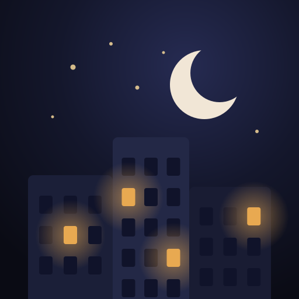

Yalnız Değilsin
Gece uyanık olan tek anne sen değilsin
Yalnız Değilsin, gece bebeğini besleyen annenin o an kaç annenin daha uyanık olduğunu görmesini sağlar. Tek dokunuşla isimsiz bir “gece notu” bırakırsın (“Gözlerim kapanıyor”, “Bebek gaz çıkarıyor”…), başkalarının notlarına sarılırsın. Her sabah 09:00'da pano sıfırlanır.
İletişim
Soru, öneri ya da bir hata için bize yaz:
Sık sorulanlar
Sayılar gerçek mi?
Evet. “Şu an uyanık” sayısı, son 20 dakikada uygulamayı açmış telefonları sayar. Uydurma ya da süslenmiş sayı göstermiyoruz. Uygulama yeni olduğu için bazı gecelerde az kişi görebilirsin. O zaman notunu bırak, birazdan uyanan anne seni görecek.
Kim olduğumu biri görebilir mi?
Hayır. Ad, e-posta, telefon numarası ya da konum istemiyoruz. Notlar isimsiz görünür. Birinin notuna sarıldığında o anne yalnızca “bir annenin” sarıldığını görür.
Neden kendi notumu yazamıyorum?
Pano gece, yorgunken açılıyor; kimsenin kırıcı bir yazıyla karşılaşmasını istemiyoruz. Bu yüzden yalnızca hazır notlar var. Eklenmesini istediğin bir not varsa bize yaz.
Notumu silebilir miyim?
Bütün notlar, sayılar ve sarılmalar her sabah 09:00'da (Türkiye saati) kendiliğinden silinir. Telefonun da her gece kendine yeni bir kimlik üretir; iki gecen birbirine bağlanamaz.
İnternet gerekiyor mu?
Evet. Pano, uygulama açıkken yarım dakikada bir yenilenir. Uygulama kapalıyken hiçbir şey gönderilmez; bildirim de gelmez.
Çok zorlanıyorum.
Doğumdan sonraki aylarda yorgunluk ve hüzün çok yaygındır. Ama iki haftadan uzun süren çökkünlük, hiçbir şeyden zevk alamamak ya da kendine veya bebeğine zarar verme düşüncesi doğum sonrası depresyonun işareti olabilir ve tedavisi vardır. Aile hekimine ya da ebene anlat. Acil bir durumda 112'yi ara.